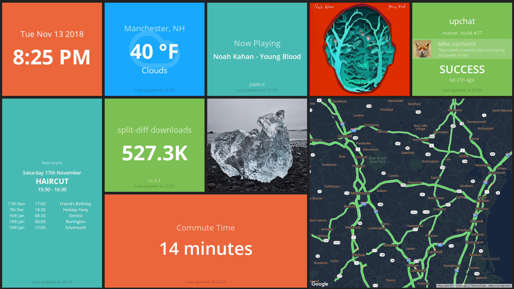
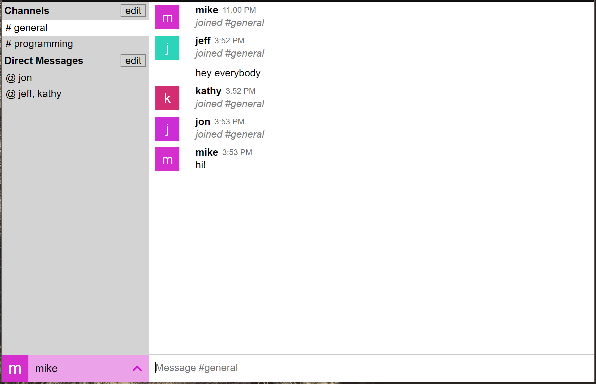
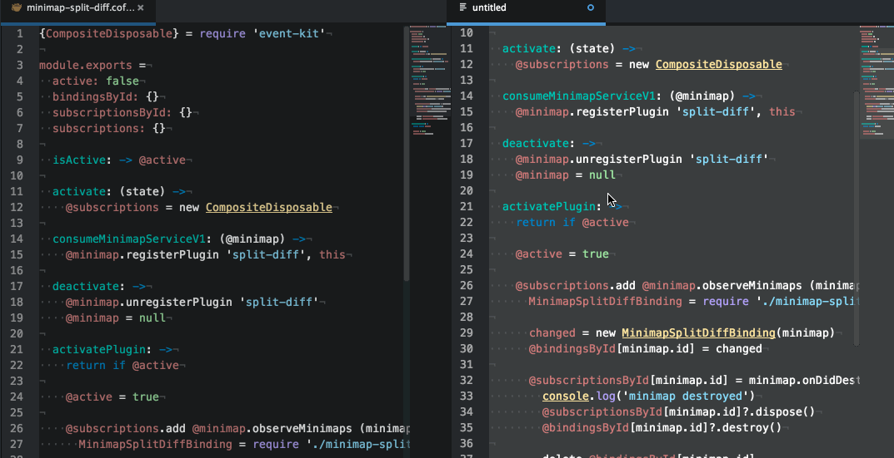
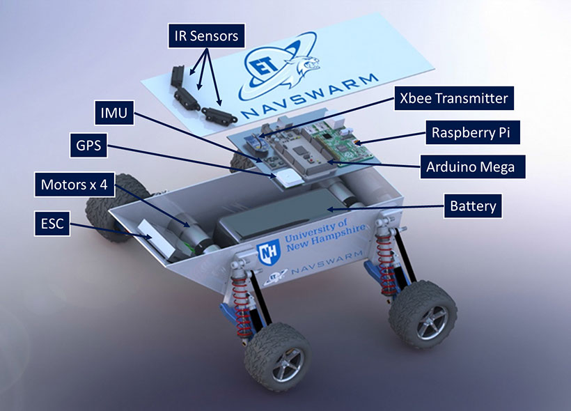
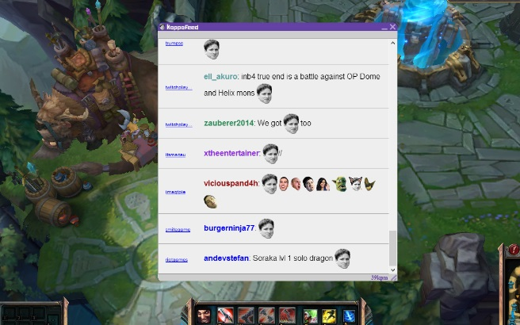

I am a Software Developer who graduated in 2015 from the University of New Hampshire with a B.S. in Computer Science. I live in Manchester, NH and I am currently employed with Pegasystems Inc.
Below are some of my favorite projects (in order of creation) with relevant links at the top right of each section.
Updash is a personalized information dashboard for my home. It displays helpful things about my life such as commute time, currently playing music, weather, calendar, Instagram photos, etc.
It is built using Smashing (a Ruby-based framework for quickly building dashboards) and runs on a Raspberry Pi connected to a monitor. I had to customize many of the widgets as they were either no longer working or did not exist.
Technologies: Smashing, Ruby, Coffeescript, CSS
Upchat is a web app heavily inspired by Slack. It supports channels, nested sub-channels, single/multi user direct messages, channel/user mentions, profile pictures, and more.
This project started as an excuse to learn Node, then exploded into an opportunity to learn many more aspects of creating and running a web app:
Technologies: Webpack, Node, Express, Websockets, JWT, Postgres, React, Sass, Mocha, Chai, CircleCI
I created this website from scratch with the goal of honing my skills with CSS transitions and understanding static websites a bit more. I have more recently gone back and updated the CSS to provide a better experience for mobile devices.
Technologies: HTML, JQuery, CSS
Split Diff is an Atom text editor package that compares code side-by-side and highlights any differences. I began using Atom at my first full time job. At the time, the editor was freshly out of beta and I noticed there was no package available to diff files. Even though I don't use the package much anymore, I have continued to support it.
Developing Split Diff has given me valuable experience with the open source community. It has also given me quite a lot of practice with trying to work within the bounds of an API. I have had to do some pretty interesting workarounds to do things like keep the two editor scroll positions in sync, add empty lines so the diff chunks stay visibly next to each other, run the diffing calculations on a separate Node process so the UI doesn't freeze, etc.
Another popular Atom package, Git Time Machine, is built on top of Split Diff, and I have worked with the developer of that package to expose necessary hooks into my package. I have also developed two other Atom packages: Minimap Split Diff and Outline Selection.
Technologies: Coffeescript, Javascript, Less
My senior project at UNH was Extraterrestrial Navigational Swarm. The goal of the project was to create a swarm of robots that would be able to implement any swarming algorithm thrown at it - specifically the Partical Swarm Optimization algorithm. This algorithm would allow the robots to cooperatively search an area to find the lowest altitude.
To achieve the goal, I was in charge of getting all of the devices on the robot to communicate with one another. The Arduino Mega was used to drive the motors and collect locational data. This data needed to be passed to the Raspberry Pi Model B+ for the swarming algorithm. Then a subset of the data needed to be broadcast to the rest of the swarm in mesh networking mode via Zigbee devices.
The ET-NavSwarm project was an invaluable experience. The greatest reward for all of the hard work we put into the project was getting to visit NASA's Goddard Space Flight Center. I experienced some amazing things there, including the Hubble Space Telescope Operations Control Center, the assembly of the James Webb Space Telescope in the world's largest clean room, and finally, being able to present our research to top NASA engineers.
Technologies: Java, C, Google Protocol Buffers
Kappafeed is a program that listens in top Twitch.tv channels for specified emoticons and displays them in one collective feed. It integrates with Twitch APIs and IRC servers in order to merge the top chat channels into one.
At one point, I created a Kappafeed Overwolf app for a contest they were hosting and actually won a gaming headset.
I learned a lot from this project about maintaining servers and keeping a service running reliably 24/7. The code for this project got a bit unruly as more features were added and bugs that would cause the service to crash were fixed. I learned valuable lessons about code refactor and structure for future projects.
Technologies: Python, Tornado Web Server, IRC, Websockets, HTML, JQuery, CSS